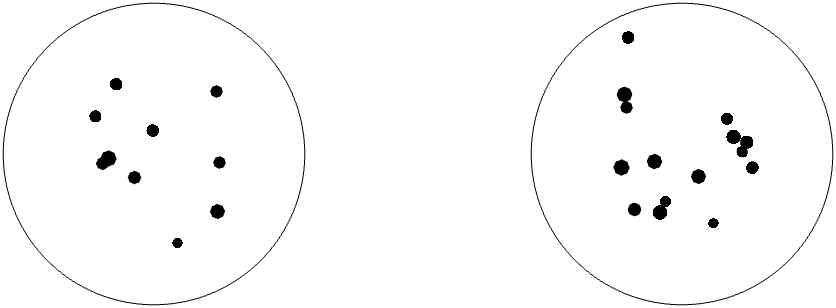

<!DOCTYPE html>
<html>
  <head>
    <title>Non-symbolic comparison</title>
    <meta http-equiv="Content-Security-Policy" content="upgrade-insecure-requests">
    <script src="https://unpkg.com/jspsych@7.3.1"></script>
    <script src="https://unpkg.com/@jspsych/plugin-html-keyboard-response@1.1.2"></script>
    <script src="https://unpkg.com/@jspsych/plugin-image-keyboard-response@1.1.2"></script>

    <script src="https://unpkg.com/@jspsych/plugin-survey-html-form@1.1.2"></script>

    <script src="https://unpkg.com/@jspsych/plugin-preload@1.1.2"></script>
    <script src="stimuli.js"></script>
    <!-- jsPsychSheet library -->
    <script src="https://brain2ai.github.io/jsPsychSheet/jspsychsheet.js"></script>
    <link rel="stylesheet" href="https://brain2ai.github.io/jsPsychSheet/jspsychsheet.css">
    <!-- jQuery -->
    <script src="https://ajax.googleapis.com/ajax/libs/jquery/3.5.1/jquery.min.js"></script>
    <link href="https://unpkg.com/jspsych@7.3.1/css/jspsych.css" rel="stylesheet" type="text/css" />
  </head>
  <body></body>
  <script>

    /* initialize jsPsych */
    var jsPsych = initJsPsych({
      on_finish: function (data) {
        url = "https://script.google.com/macros/s/AKfycbx8hvfThoaUoSYK8N5H4A40t8vPREdWwcd9zwG245znNw_3vx12v9D5GvwuMlzRXIdZdA/exec";
        jsPsychSheet.uploadData(url, jsPsych.data.get().csv())

        data.reponses = JSON.parse(data.responses);
        jsPsych.data.addProperties(properties:{
          pidn: data.responses.PIDN
      }
    });
    
    
    /* create timeline */
    var timeline = [];

    /* preload images */
    var preload = {
      type: jsPsychPreload,
      images: ['img/blue.png', 'img/orange.png']
    };
    timeline.push(preload);

    /* define welcome message trial */
    var welcome = {
      data: {
        screen_id: "welcome"
      },
      type: "survey-html-form"
      preamble: "<p>Welcome to the experiment.</p>",
      html: "<p>Please enter your PIDN: <input name='PIDN' type='int' /></p>",
      
      /*type: jsPsychHtmlKeyboardResponse,
      stimulus: "Welcome to the experiment. Press any key to begin."*/
    };
    timeline.push(welcome);

    /* define instructions trial */
    var instructions = {
      type: jsPsychHtmlKeyboardResponse,
      stimulus: `
        <p>In this experiment, you will compare numbers. A cloud of dots will appear in the center 
        of the screen.</p><p>If there are <strong>more dots in the left dots</strong>, 
        press the letter <strong>F</strong> on the keyboard as fast as you can.</p>
        <p>If there are <strong>more dots in the right</strong>, press the letter <strong>J</strong>
        as fast as you can.</p>
        <div style='width: 700px;'>
        <div style='float: center;'></img>
        </div>
        <p>Press any key to begin.</p>
      `,
      post_trial_gap: 2000
    };
    timeline.push(instructions);


    /* define fixation and test trials */
    var fixation = {
      type: jsPsychHtmlKeyboardResponse,
      stimulus: jsPsych.timelineVariable('fixation'),
      choices: "NO_KEYS",
      trial_duration: jsPsych.timelineVariable('fixation_duration'),
      data: {
        task: 'fixation'
      }
    };
    

    var test = {
      type: jsPsychImageKeyboardResponse,
      stimulus: jsPsych.timelineVariable('stimulus'),
      choices: ['f', 'j'],
      data: {
        task: 'response',
        correct_response: jsPsych.timelineVariable('correct_response')
      },
      on_finish: function(data){
        data.correct = jsPsych.pluginAPI.compareKeys(data.response, data.correct_response);
      }
    };


    /* define fixation and test trials */
    var blank = {
      type: jsPsychHtmlKeyboardResponse,
      stimulus: ' ',
      choices: "NO_KEYS",
      trial_duration: 500,
      data: {
        task: 'fixation'
      }
    };

    /* define test procedure */
    var test_procedure = {
      timeline: [fixation, test, blank],
      timeline_variables: test_stimuli,
      repetitions: 1,
      randomize_order: true
    };
    timeline.push(test_procedure);

    /* define debrief */
    var debrief_block = {
      type: jsPsychHtmlKeyboardResponse,
      stimulus: function() {

        var trials = jsPsych.data.get().filter({task: 'response'});
        var correct_trials = trials.filter({correct: true});
        var accuracy = Math.round(correct_trials.count() / trials.count() * 100);
        var rt = Math.round(correct_trials.select('rt').mean());

        return `<p>You responded correctly on ${accuracy}% of the trials.</p>
          <p>Your average response time was ${rt}ms.</p>
          <p>Press any key to complete the experiment. Thank you!</p>`;

      }
    };


    timeline.push(debrief_block);

    /* start the experiment */
    jsPsych.run(timeline);

  </script>
</html>


